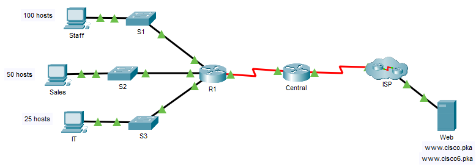

- Configure Basic Settings
- Create the Subnets and Document
- Configure the devices as per the instructions

| Device | Interface | IP Address IPv6 Address/Prefix |
Default Gateway | |
|---|---|---|---|---|
| R1 | G0/0 | 192.168.0.1 | 255.255.255.128 | NOT APPLICABLE |
| 2001:db8:acad::1/64 | ||||
| G0/1 | 192.168.0.129 | 255.255.255.192 | NOT APPLICABLE | |
| 2001:db8:acad:1::1/64 | ||||
| G0/2 | 192.168.0.193 | 255.255.255.224 | NOT APPLICABLE | |
| 2001:db8:acad:2::1/64 | ||||
| CENTRAL | S0/0/1 | 172.16.1.2 | 255.255.255.252 | NOT APPLICABLE |
| 2001:db8:2::1/64 | ||||
| S0/0/0 | 209.165.200.226 | 255.255.255.252 | NOT APPLICABLE | |
| 2001:db8:1::1/64 | ||||
| S1 | VLAN 1 | 192.168.0.2 | 255.255.255.128 | 192.168.0.1 |
| S2 | VLAN 1 | 192.168.0.130 | 255.255.255.192 | 192.168.0.129 |
| S3 | VLAN 1 | 192.168.0.194 | 255.255.255.224 | 192.168.0.193 |
| Staff | NIC | 192.168.0.3 | 255.255.255.128 | 192.168.0.1 |
| 2001:db8:acad::2/64 | FE80::1 | |||
| Sales | NIC | 192.168.0.131 | 255.255.255.192 | 192.168.0.129 |
| 2001:db8:acad:1::2/64 | FE80::1 | |||
| IT | NIC | 192.168.0.195 | 255.255.255.224 | 192.168.0.193 |
| 2001:db8:acad:2::2/64 | FE80::1 | |||
| Web | NIC | 64.100.0.3 | 255.255.255.248 | 64.100.0.1 |
| 2001:db8:cafe::3/64 | FE80::1 | |||
IP Address:192.168.0.195 Subnet Mask:255.255.255.224 Default Gateway: 192.168.0.193 IPv6 Address:2001:db8:acad:2::2/64 Default Gateway: FE80::1 Link Local Address: FE80::2
IP Address:192.168.0.131 Subnet Mask:255.255.255.192 Default Gateway: 192.168.0.129 IPv6 Address:2001:db8:acad:1::2/64 Default Gateway: FE80::1 Link Local Address: FE80::2
IP Address:192.168.0.3 Subnet Mask:255.255.255.128 Default Gateway: 192.168.0.1 IPv6 Address:2001:db8:acad::2/64 Default Gateway: FE80::1 Link Local Address: FE80::2
Router>enable Router#config t Router(config)#hostname R1Disable DNS lookup.
R1(config)#no ip domain-lookupAssign Ciscoenpa55 as the encrypted privileged EXEC mode password.
R1(config)#enable secret Ciscoenpa55Assign Ciscoconpa55 as the console password and enable login.
R1(config)#line console 0 R1(config-line)#password Ciscoconpa55 R1(config-line)#login R1(config-line)#exitRequire that a minimum of 10 characters be used for all passwords.
R1(config)#security passwords min-length 10Encrypt all plaintext passwords.
R1(config)#service password-encryptionCreate a banner that warns anyone accessing the device that unauthorized access is prohibited.
R1(config)#banner motd #Warning! Unauthorized access is strictly prohibited#Configure and enable all the Gigabit Ethernet interfaces.
R1(config)#ipv6 unicast-routing R1(config)#interface GigabitEthernet0/0 R1(config-if)#ip address 192.168.0.1 255.255.255.128 R1(config-if)#ipv6 address FE80::1 link-local R1(config-if)#ipv6 address 2001:DB8:ACAD::1/64 R1(config-if)#no shutdown R1(config-if)#interface GigabitEthernet0/1 R1(config-if)#ip address 192.168.0.129 255.255.255.192 R1(config-if)#ipv6 address FE80::1 link-local R1(config-if)#ipv6 address 2001:DB8:ACAD:1::1/64 R1(config-if)#no shutdown R1(config-if)#interface GigabitEthernet0/2 R1(config-if)#ip address 192.168.0.193 255.255.255.224 R1(config-if)#ipv6 address FE80::1 link-local R1(config-if)#ipv6 address 2001:DB8:ACAD:2::1/64 R1(config-if)#no shutdown R1(config-if)#interface Serial0/0/1 R1(config-if)#ip address 172.16.1.2 255.255.255.252 R1(config-if)#ipv6 address FE80::1 link-local R1(config-if)#ipv6 address 2001:DB8:2::1/64 R1(config-if)#no shutdown R1(config-if)#exitConfigure SSH on R1:
R1(config)#ip domain-name CCNA-lab.comGenerate a 1024-bit RSA key.
R1(config)#crypto key generate rsa general-keys modulus 1024Configure the VTY lines for SSH access.
R1(config)#line vty 0 15 R1(config-line)#login local R1(config-line)#transport input ssh R1(config-line)#exitUse the local user profiles for authentication.
R1(config)#username Admin1 secret Admin1pa55Configure the console and VTY lines to log out after five minutes of inactivity.
R1(config)#line console 0 R1(config-line)#exec-timeout 5 0 R1(config-line)#line vty 0 15 R1(config-line)#exec-timeout 5 0Block anyone for three minutes who fails to log in after four attempts within a two-minute period.
R1(config)#login block-for 180 attempts 4 within 120
Switch(config)#hostname S1 Switch(config)#hostname S2 Switch(config)#hostname S3Configure the SVI interface with the IPv4 address and subnet mask according to your addressing scheme.
S1(config)#interface Vlan1 S1(config-if)#ip address 192.168.0.2 255.255.255.128 S1(config-if)#no shutdown S2(config)#interface Vlan1 S2(config-if)#ip address 192.168.0.130 255.255.255.192 S2(config-if)#no shutdown S3(config)#interface Vlan1 S3(config-if)#ip address 192.168.0.194 255.255.255.224 S3(config-if)#no shutdownConfigure the default gateway.
S1(config-if)#ip default-gateway 192.168.0.1 S2(config-if)#ip default-gateway 192.168.0.129 S3(config-if)#ip default-gateway 192.168.0.193Disable DNS lookup.
S1(config)#no ip domain-lookup S2(config)#no ip domain-lookup S3(config)#no ip domain-lookupAssign Ciscoenpa55 as the encrypted privileged EXEC mode password.
S1(config)#enable secret Ciscoenpa55 S2(config)#enable secret Ciscoenpa55 S3(config)#enable secret Ciscoenpa55Assign Ciscoconpa55 as the console password and enable login.
S1(config)#line con 0 S1(config-line)#password Ciscoconpa55 S1(config-line)#login S2(config)#line con 0 S2(config-line)#password Ciscoconpa55 S2(config-line)#login S3(config)#line con 0 S3(config-line)#password Ciscoconpa55 S3(config-line)#loginConfigure the console and VTY lines to log out after five minutes of inactivity.
S1(config)#line con 0 S1(config-line)#exec-timeout 5 0 S1(config-line)#line vty 0 15 S1(config-line)#exec-timeout 5 0 S2(config)#line con 0 S2(config-line)#exec-timeout 5 0 S2(config-line)#line vty 0 15 S2(config-line)#exec-timeout 5 0 S3(config)#line con 0 S3(config-line)#exec-timeout 5 0 S3(config-line)#line vty 0 15 S3(config-line)#exec-timeout 5 0Encrypt all plaintext passwords.
S1(config)#service password-encryption S2(config)#service password-encryption S3(config)#service password-encryption
Configured and verified Packet Tracer Skill Integration Challenge.